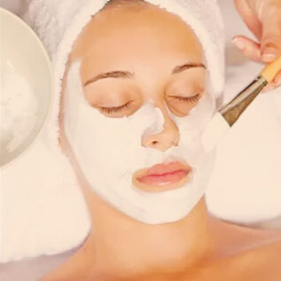
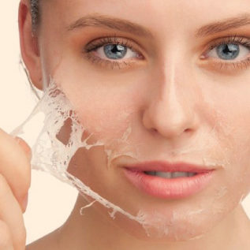
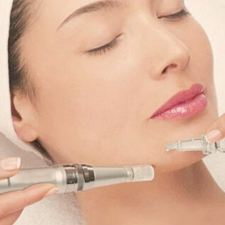
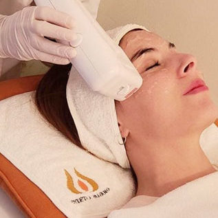

Limpieza facial ultraprofunda
Una limpieza facial es un tratamiento de higiene profunda que tiene como objetivo eliminar las impurezas de la piel: celulas muertas, comedones, pústulas, quistes de millium y otras imperfecciones.
Tiene un doble propósito: activar el proceso de renovación celular y preparar la piel para aprovechar al máximo las propiedades de los principios activos o tratamientos que se aplican posteriormente.
3

Tratamientos hidratantes
Una piel deshidratada requiere de una renovación completa, necesita un tratamiento hidratante de calidad, enfocado a cubrir distintas carencias:
- Aumentar la capacidad de retención de agua.
- Incrementar el grado de hidratación y elasticidad.
- Unificar el tono de la piel
- Alisar la piel y aumentar su luminosidad.
Contamos con diversos protocolos de hidratación, a fin de brindar a cada paciente el más adecuado según las necesidades específicas de su piel.
6

Peeling químico
Consiste en la aplicación tópica de un preparado químico para descamar y desprender células envejecidas y dañadas, que son reemplazadas por una piel regenerada, suave y de tono uniforme.
Produce el aumento del colágeno de la piel, lo cual mejora las arrugas, y cicatrices. Tambiéndisminuye la pigmentación de manchas y controla la secreción sebácea en pieles acnéicas.
Contamos con una variedad de peelings para todos los tipos de piel, ya sean pieles normales,sensibles o propensas al acné. La especialista analizará tu piel y determinará qué tratamientose adecua mejor a tus necesidades.
9

Microneedling
Es una terapia mínimamente invasiva en la que se realizan múltiples micropunciones en la piel con un dispositivo que contiene microagujas y controla la profundidad de esas pequeñas incisiones.
Por debajo de 1mm se logra un efecto «flash» muy favorecedor, al aplicar sobre la piel principios activos especificos (ácido hialurónico, vitaminas, oligoelementos etc.) para que penetren más profundamente por los canales creados con el Dermapen.
12

Fotorrejuvenecimiento
Tratamiento no invasivo que revierte de manera eficaz los signos del envejecimiento cutáneo, enrojecimiento en el rostro, venas y manchas producidas por el sol.
-Atenúa visiblemente las arrugas, ya que estimula la formación de colágeno.
-Mejora la apariencia de la piel y poros dilatados otorgando una tonalidad uniforme.
-Especialmente eficaz en cara, cuello, escote y dorso de las manos.
15